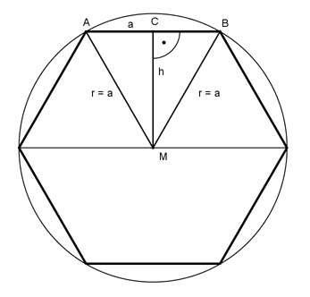

Pythagoras Aufgabe 47 Berechnen Sie die Fläche A eines regelmäßigen Sechsecks in cm², wenn die Seite a = 6 cm.  a = r wegen regelmäßigem Sechseck Satz von Pythagoras im Dreieck MBC: BC = a/2 a² = h² + BC² | -BC² h² = a² - BC² a h² = a² - (---)² 2 h² = 6² cm² - 3 cm² = 27 cm² |√ h = 5,2 cm a * h 6 cm * 5,2 cm A = 6 * ------- = 6 * ---------------- 2 2 A = 93,6 cm²